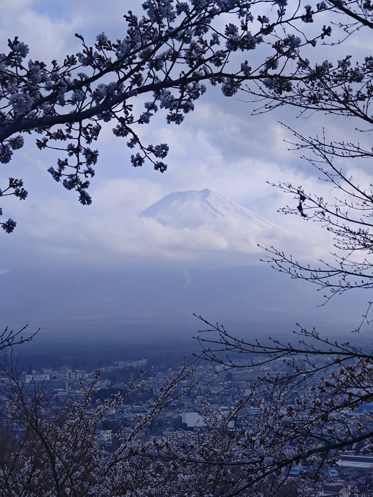

FUJI & TOKYO
富士山 · 东京
潤井川岸的樱花与富士山、山麓湖景，以及新仓山浅间公园的春日风景。
2025.04.11 — 04.13航班 · Kodama · 包车 · 巴士
潤井川岸的樱花与富士山、本栖湖的湖景，以及新仓山浅间公园的春日风景。
放大地图查看照片
行程接续航班铁路 / 轨道交通巴士打车 / 包车 / 团体巴士
公共交通按线路或途经站点绘制，均为行程示意；未记下的具体班次留空。航班连线非实际飞行轨迹。
每日记录 3 天
DAY 01
抵达东京
JR 总武快速、成田线晚间抵达成田机场，乘列车进入东京。
→→
DAY 02
龍巌淵 · 湖畔 · 忠灵塔
Kodama、包车乘 Kodama 到新富士后包车游览，沿龍巌淵的潤井川看樱花与富士山，再前往本栖湖与忠灵塔。
→→→→
DAY 03
富士山站 · 东京返程
巴士、机场快特经富士山站搭巴士返回东京，再乘机场快特前往成田机场。
→→→
晚间抵达成田机场04.11 · 20:18 东京成田机场龍巌淵河岸的樱花与富士山04.12 · 10:38 潤井川 · 龍巌淵潤井川两岸盛开的樱花04.12 · 11:10 潤井川 · 龍巌淵本栖湖与富士山相映04.12 本栖湖潤井川的樱花与富士山04.12 潤井川 · 龍巌淵街道旁望向富士山04.12 · 12:52 潤井川 · 龍巌淵本栖湖畔04.12 · 14:03 本栖湖樱花季的山间街景04.12 · 15:33 新仓山浅间公园 · 忠灵塔走入开满樱花的步道04.12 · 15:55 新仓山浅间公园 · 忠灵塔樱花掩映下的忠灵塔04.12 · 16:04 新仓山浅间公园 · 忠灵塔透过樱花看富士山04.12 · 16:20 新仓山浅间公园 · 忠灵塔从山上望向富士吉田街区04.12 · 16:27 新仓山浅间公园 · 忠灵塔富士山站前的巴士04.13 · 11:06 富士山站返程前的一餐寿司04.13 · 14:39 东京市区成田机场的彩绘飞机04.13 · 19:31 东京成田机场 暂无照片。